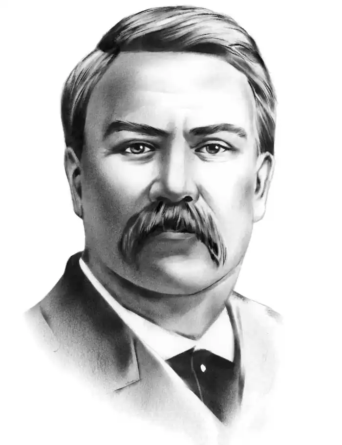

ІВАН КАРПЕНКО-КАРИЙ
(1845 — 1907)
Народився Іван Карпович Тобілевич 29 вересня 1845р. в с. Арсенівка поблизу Єлисаветграда; батько його походив із старовинного зубожілого дворянського роду й працював прикажчиком поміщицького маєтку, а мати була простою селянкою. Освіту, до якої так тягнувся хлопець, довелося через матеріальну скруту обмежити чотирикласним училищем і з чотирнадцяти років заробляти на прожиття. Майже два десятиліття забрала в І. Тобілевича служба в різних канцеляріях — від писарчука до секретаря міського поліцейського управління. Перебуваючи в Єлисаветграді (1865 — 1884), Тобілевич знайомиться з творами Руссо, Дідро, Вольтера, Герцена, з економічними трактатами Бокля, Мілля, разом із своїм другом М. Кропивницьким читає західноєвропейських письменників, філософів, соціологів. Переведений трохи більш як на рік до Херсона, він познайомився з колишнім учасником Кирило-Мефодіївського товариства і товаришем Т. Шевченка Д. П. Пильчиковим, під впливом якого прочитав "багато корисних книжок з історії народів, з класичної літератури, серед якої Шекспір і Островський зайняли перше місце". 1863р. у Бобринці на Єлисаветградщині утворився драматичний гурток, одним з найактивніших учасників якого був І. Тобілевич. Він грав різні ролі у п'єсах Котляревського, Квітки-Основ'яненка, Кухаренка, Гоголя, Островського. В єлисаветградському гуртку Тобілевич був і керівником, і режисером, і актором, беручи участь у створенні вистав за п'єсами Островського, Гоголя, Грибоєдова, Мольера, Шіллера. Демократичні переконання Тобілевича закономірно привели його до участі в організації (разом з П. І. Михалевичем) таємного гуртка, на засіданнях якого вивчали праці М. Чернишевського, Ф. Лассаля, Д. Мілля, К. Маркса та Ф. Енгельса. З метою популяризації революційно-демократичної та народницької літератури у гуртку планувалось перекласти українською мовою ряд творів російської белетристики — Г. Успенського, Ф. Решетникова, Ф. Нефедова, М. Наумова, О. Левітова, М. Златовратського та ін., підготувати загальний нарис політичної економії за М. Чернишевським. У цій роботі найактивнішу участь брав Тобілевич. До першого етапу літературної творчості Тобілевича належить оповідання "Новобранець" (написане 1881р., опубліковане1889р. під псевдонімом Гнат Карий). У ньому йдеться про тяжку долю селянської родини, яка з величезними зусиллями вибивається із злиднів і, здається, могла б уже зрештою досягнути якогось добробуту, коли б не втручання державної машини. Наскільки щільно в житті Тобілевича поєднувалась творча й громадсько-політична діяльність, свідчить той факт, що й оповідання "Новобранець", і першу свою драму "Бурлака" ("Чабан", 1883) він подавав на обговорення нелегального гуртка. Завершувати "Бурлаку", як і "Хто винен?" ("Безталанна"), драматургові довелось уже в Новочеркаську, куди його було вислано у травні 1884р. за участь у діяльності гуртка та за допомогу політичним "злочинцям". Щоб заробити на прожиття, піднаглядний Тобілевич працював підручним коваля, а згодом відкрив палітурну майстерню. У 1886р. в Херсоні було видано перший "Збірник драматичних творів" І. Карпенка-Карого, до якого увійшли драми "Бондарівна" і "Хто винен?" та комедія "Розумний і дурень", а в 1887р. опубліковано "Наймичку". Але їх майже не купували, бо публіка не була привчена читати п'єси. П'єси, створені Карпенком-Карим протягом майже п'ятнадцяти років, відбивають еволюцію явища, яке видозмінювалось буквально на очах драматурга — "глитайства". Його персонажам — Михайлові Михайловичу ("Бурлака"), Окуню ("Розумний і дурень", 1885), Цокулю ("Наймичка", 1885), Калитці ("Сто тисяч", 1890), Пузиреві ("Хазяїн", 1900) — притаманне не просто збільшення економічних масштабів їх діяльності, їх здирства, воно ще яскравіше виявляє їх людську дрібність, а то й нікчемність, духовну порожнечу. Дещо осторонь їх стоїть Мартин Боруля, який домагається дворянського звання. Сатиричне зерно комедії "Мартин Боруля" (1886) пов'язане вже не із засобами збагачення чи привласнення того, що належить іншим, а з прагненням сільської буржуазії до політично-правової рівності з дворянством. Дві останні гіркі комедії — "Суєта" (1903) і "Житейське море" (1904; визначена автором як "протяг", тобто продовження, "Суєти") — драматург назвав "сценами", наче визнаючи приналежність їх до європейської нової драми. Так, у "Суєті" відсутній головний герой, і п'єса являє ряд сцен, покликаних характеризувати спосіб життя й мислення заможного селянина та його дорослих дітей, які представляють різні соціальні шари суспільства (хлібороб, учитель, дрібні службовці). Навесні 1887р. І. Карпенкові-Карому було дозволено повернутися на Україну, але ще до кінця 1888р. він перебував на хуторі "Надія" (тепер заповідник у Кіровоградській області) під гласним наглядом поліції (негласний нагляд було знято з нього 12 березня 1903р.). Діставши громадянські права, Карпенко-Карий приєднався до нової театральної трупи, створеної його братом П. Саксаганським, у якій до кінця життя працював активно й напружено як артист, режисер, драматург. У 1897р. він складає "Записку до з'їзду сценічних діячів", де з болем пише про безправне становище українського театру, про цензурні та інші урядові утиски. Написане Карпенком-Карим протягом 90-х рр. на сучасну тематику виявляє прагнення дати народові "пьесы серьезные, моральные, нравоисправительные, исторические". З повчальною метою створена побутова комедія "Судженої конем не об'їдеш" (переробка з Еркмана-Шатріана, 1892), в соціально-побутовій драмі "Батькова казка" (1892) також очевидна моралізаторська тенденція, підкреслена другою її назвою — "Гріх і покаяння". Певним дидактизмом позначена драма "Понад Дніпром" (1897). На матеріалі історичного минулого, осмислення якого, за переконанням І. Карпенка-Карого, покликане збагатити українську драматургію, написано п'єси "Бондарівна" (1884), "Паливода XVIII століття" (1893; підготовчим етапом було створення у 1884р. п'єси "З Івана пан, а з пана Іван"), "Чумаки" (1897), "Лиха іскра поле спалить і сама щезне" (1896), "Сава Чалий" (1899), "Гандзя" (1902). Твори Карпенка-Карого "Лиха іскра поле спалить і сама щезне" (1896) та "Гандзя" (1902) були спробами на фольклорному матеріалі, присвяченому давньому минулому, вийти до філософських узагальнень про долю України й подати їх у цікавій сценічній формі. Трагедії Карпенка-Карого "Сава Чалий", так само створеній на основі народної історичної пісні, притаманні глибокий психологізм, точна й переконлива вмотивованість дій та вчинків героїв. І. Карпенко-Карий помер після тяжкої хвороби 15 вересня 1907р. у Берліні, куди їздив на лікування; поховано його на хуторі "Надія". Драматургія І. Карпенка-Карого своєрідно підсумувала майже столітній розвиток української драматургії, піднявши її на новий рівень. Вражаючи тематичним і жанровим багатством, вона у своїй цілісності являє собою різноманітну картину життя України протягом століть. В художній розробці історичного чи фольклорного матеріалу далекого минулого досить відчутним є зв'язок з тогочасними життєвими проблемами Твори Карпенка-Карого багатьма своїми елементами входять в ідейно-естетичний контекст нової європейської драми.